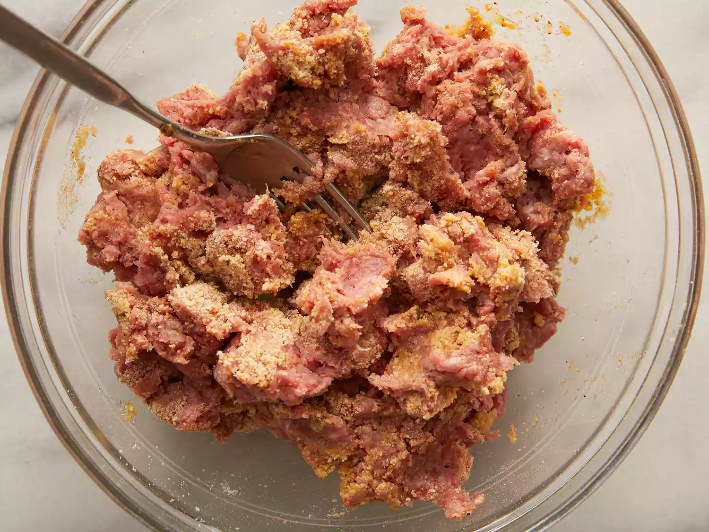
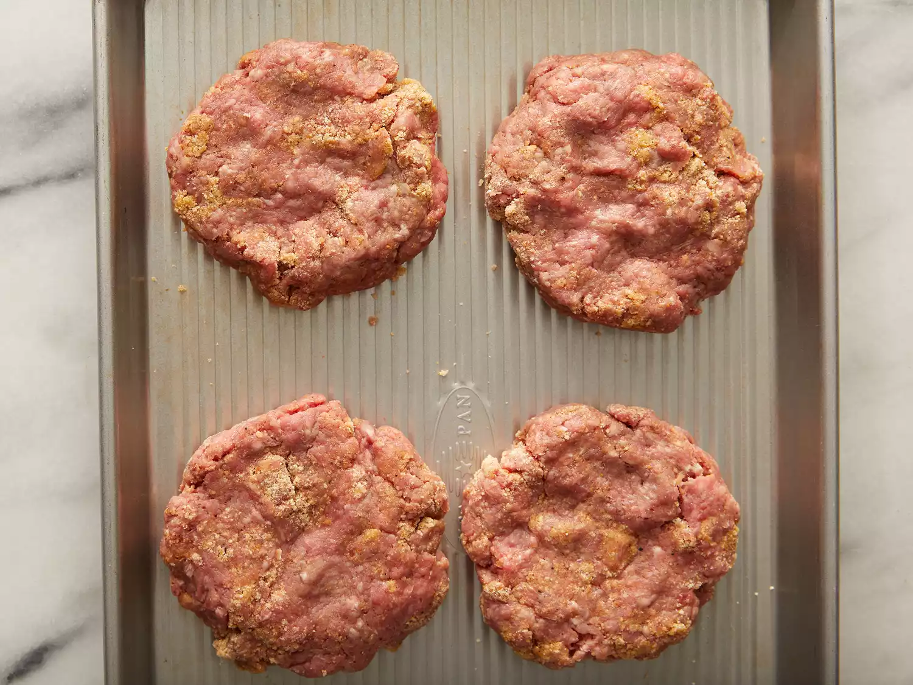
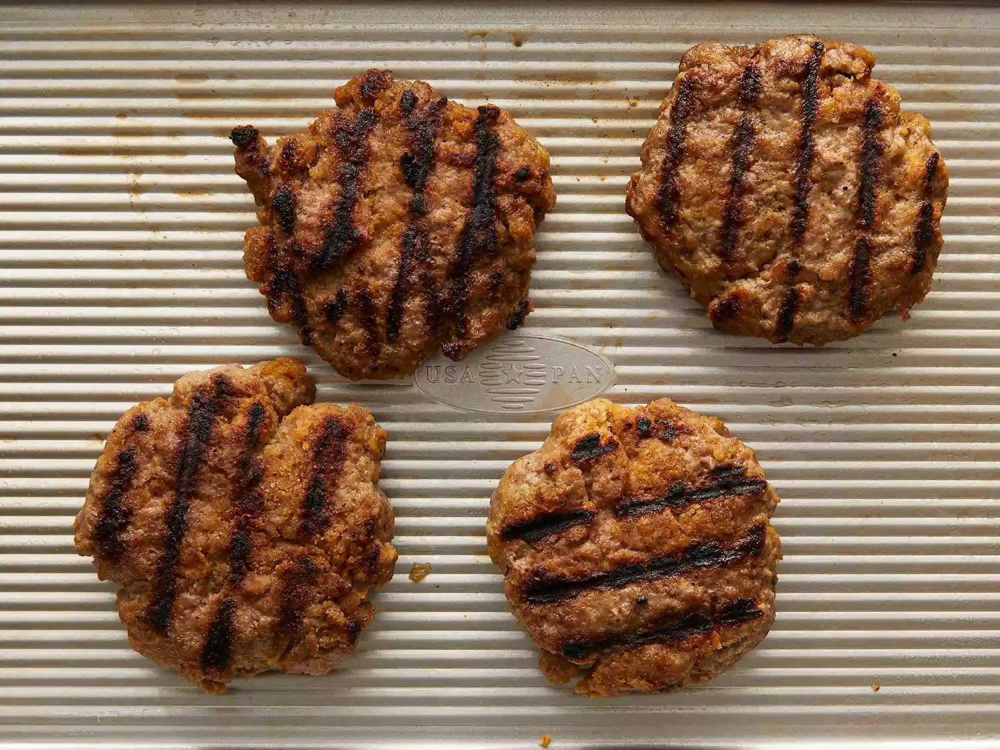

The Perfect Basic Burger

Back to Main page
This hamburger party recipe uses ground beef and an easy bread crumb mixture. Nothing beats a simple hamburger on
a warm summer evening! Enjoy on ciabatta, Kaiser, or potato rolls topped with your
favorite condiments.
Some info:
| Prep Time:
| 5 mins |
| Cook Time:
| 15 mins |
| Total Time:
| 20 mins |
| Servings:
| 4 |
| Yield:
| 4 burgers patties |
How to Make Basic Beef Burger Patties
Nothing says summer quite like a juicy grilled burger. You'll find the full recipe below with step-by-step
instructions,
but here's what you can expect when you make these top-rated burger patties:
Begin by whisking the egg, salt, and pepper together in a large bowl. Then, add the ground beef and bread crumbs
before
forming the mixture into ¾-inch patties. Place the patties on a preheated grill and cook for six to eight
minutes per
side.
Make sure the beef's temperature reads at least 160 degrees F before serving, and you're ready to go. Top with
classic
condiments like mustard, ketchup, and mayo for full-fledged flavor.
Ingredients:
- 4 large egg
- 2 teaspoons salt
- 2 teaspoons ground black pepper
- 4 pounds ground beed
- 2 cups fine dry bread crumbs
Directions:
-
Step 1
Preheat an outdoor grill for high heat and lightly oil grate.
-
Step 2
Whisk egg, salt, and pepper together in a medium bowl.
-
Step 3
Add ground beef and bread crumbs; mix with your hands or a fork until well blended.

-
Step 4
Form into four 3/4-inch-thick patties.

-
Step 5
Place patties on the preheated grill. Cover and cook 6 to 8 minutes per side, or to desired doneness. An
instant-read
thermometer inserted into the center should read at least 160 degrees F (70 degrees C).

-
Step 6
Serve hot and enjoy!
Nutrition Facts (per serving):
| Calories: |
317 |
| Fat: |
18g |
| Carbs: |
10g |
| Protein: |
27g |
Back to Main page